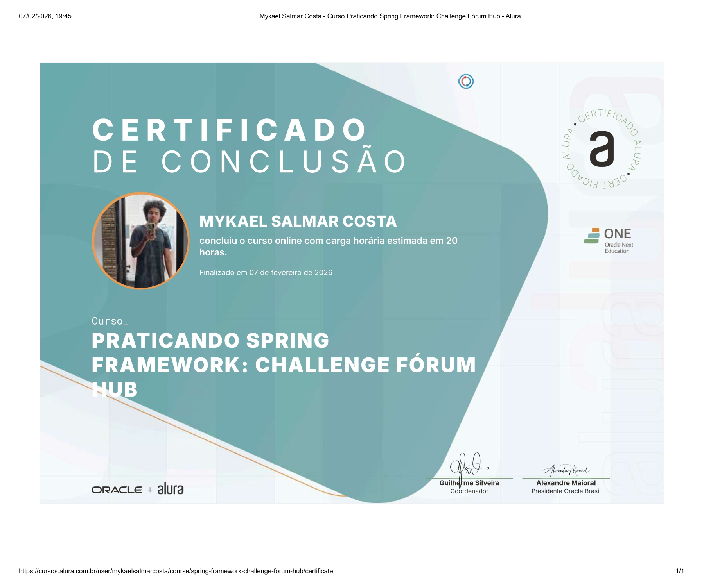
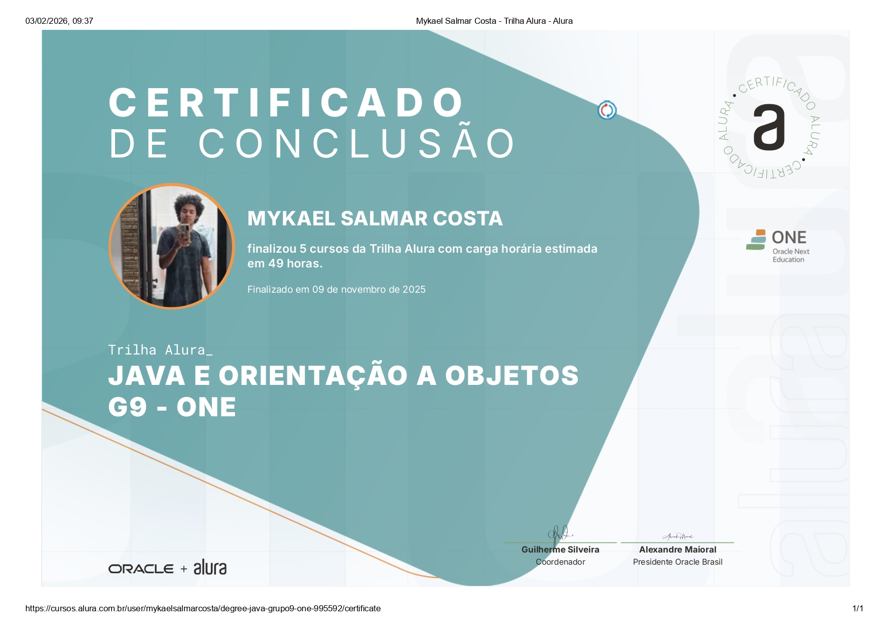
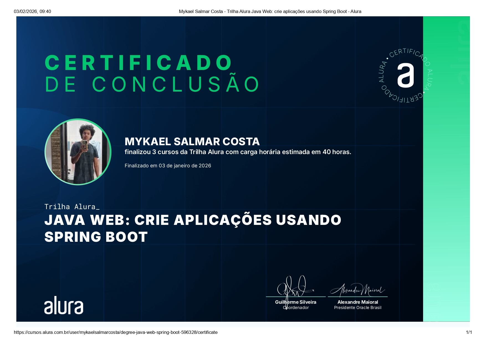
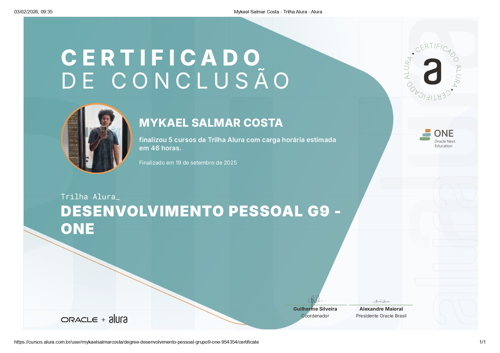
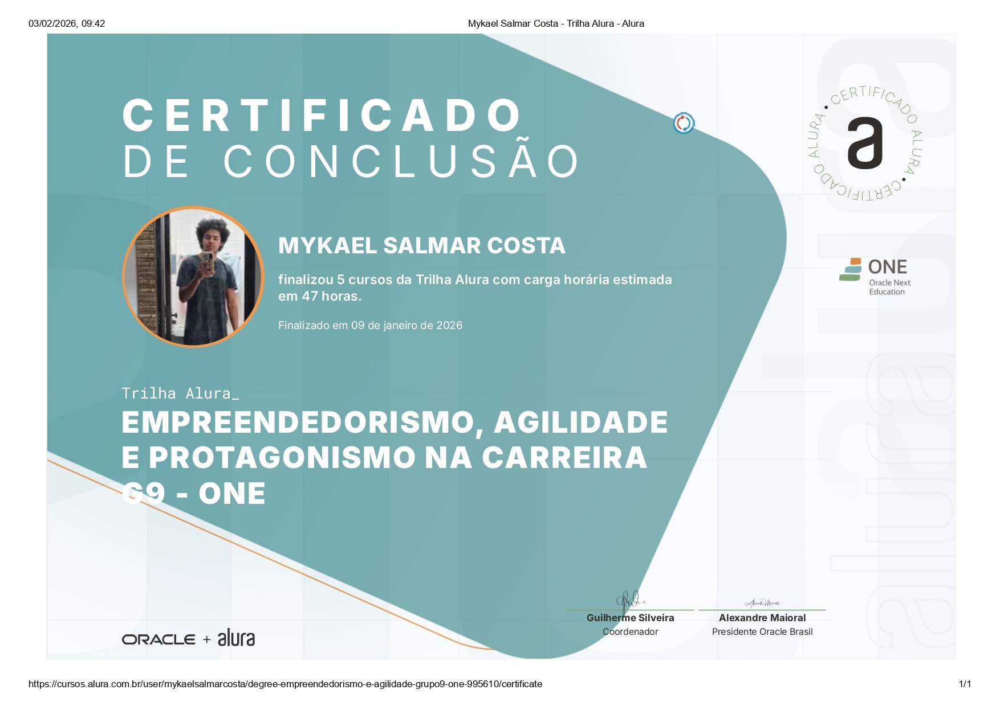
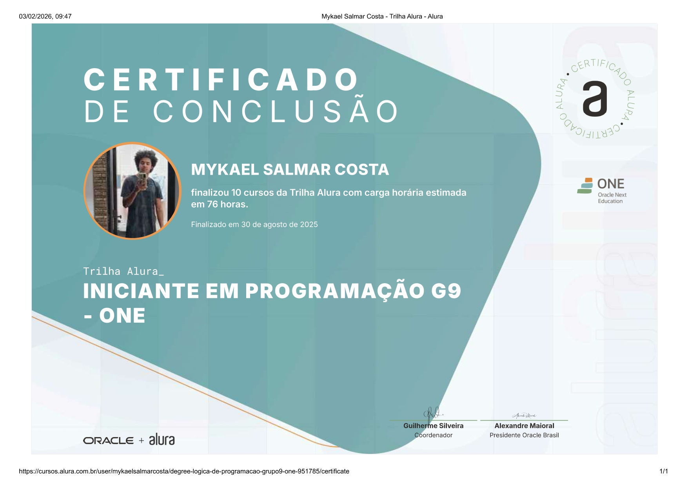
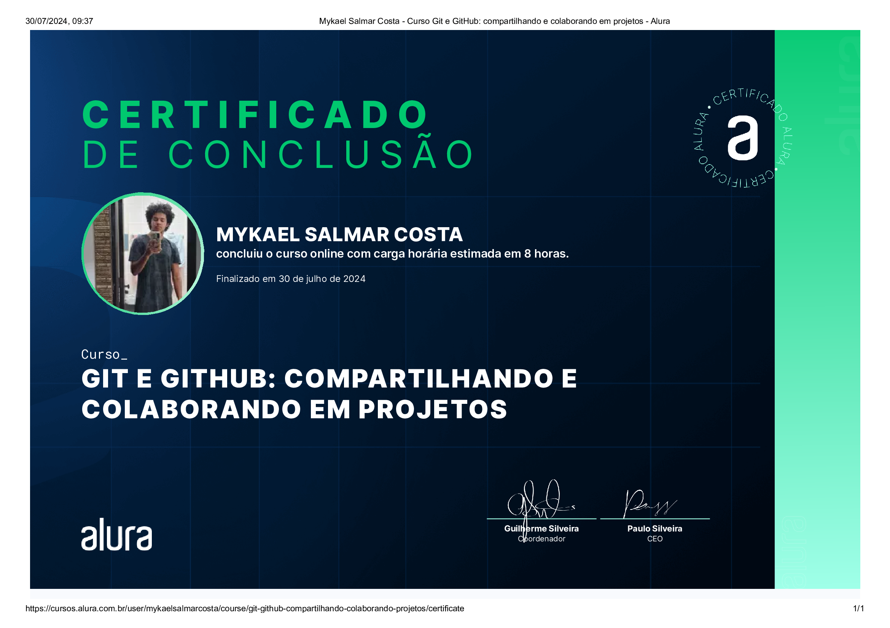
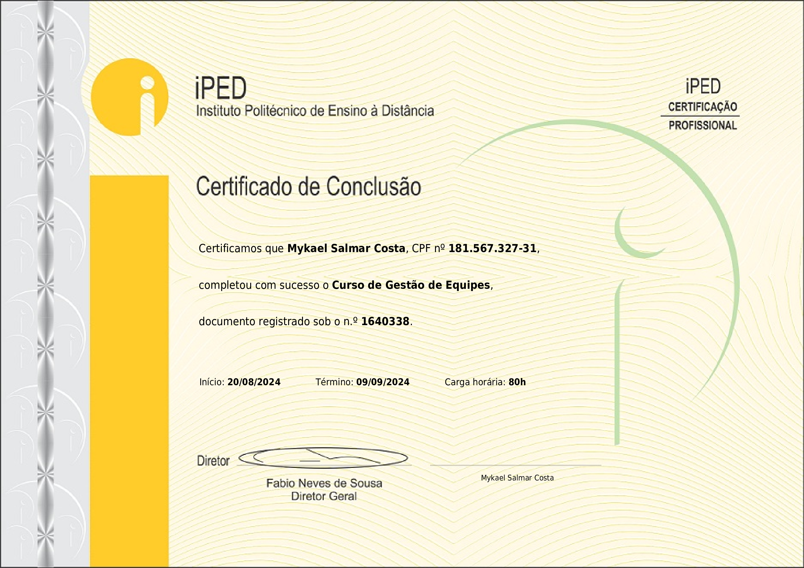
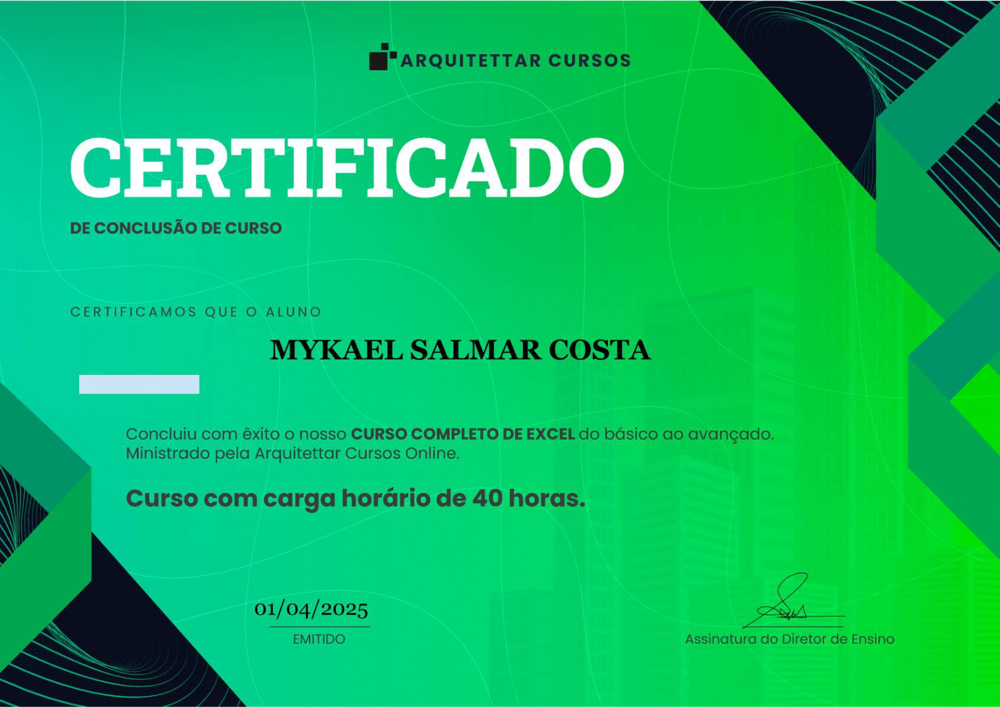

Formação e aprendizado
Certificados que reforçam a construção da minha base técnica.
Esta página reúne trilhas e cursos concluídos durante minha evolução em desenvolvimento de software. Mais do que quantidade, os certificados ajudam a mostrar consistência, direção de estudo e aprofundamento gradual em temas importantes para atuação como desenvolvedor.
Galeria
Certificados que fazem parte da minha trajetória
Clique em qualquer certificado para ampliar a visualização.








